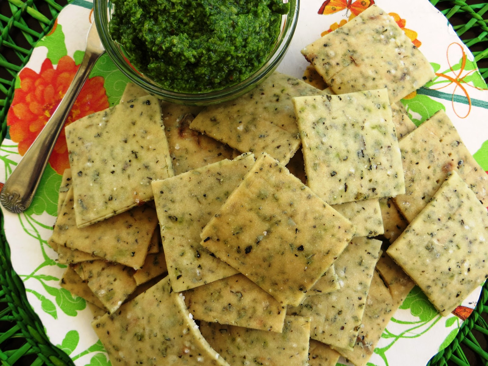

Galletitas Crackers

Ingredientes:
250g de harina
1 cucharadita de sal
1 cucharadita de azúcar
1 cucharada de orégano
80ml de aceite
100ml de agua hirviendo
Preparación:
En un bol mezclar la harina, la sal, el azúcar y el orégano.
Añadir el aceite y mezclar bien.
De a poco ir agregando el agua hirviendo, mezclando hasta formar una masa suave.
Dejar reposar 20 minutos.
Sobre la mesada enharinada estirar la masa del grosor deseado y cortar dándole forma a las galletitas. Pinchar con un tenedor para que no se inflen.
Precalentar el horno a 180°.
Aceitar una fuente.
Llevarla al horno por 5 minutos.
Retirar y colocar las galletitas en la fuente caliente. Pintarlas con un poco de aceite para que se doren más rápido.
Hornear por 15 a 20 minutos, o hasta que estén doradas.